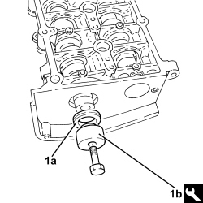

1036L30 FRONT OIL SEAL FOR CAMSHAFT IN CAMSHAFT HOUSING - REPLACE
- Path
- Procedures > 10 ENGINE > 1036 TIMING SYSTEM > 1036L CAMSHAFTS (2) IN CAMSHAFT HOUSING (1) > 1036L30 FRONT OIL SEAL FOR CAMSHAFT IN CAMSHAFT HOUSING - REPLACE
- Kind
- repair procedure (removal / refitting; the operation number is the code)
- Applies to
- engines: 2.4 JTD 20v; all production periods
- Interactive page
- https://sloeber94.github.io/elrnDB-aBrrSpdr/en/#/946002961
Applies to: engines: 2.4 JTD 20v; all production periods
 Removing
Removing
 Refitting
RefittingOp. 1016A10 SOUND-PROOFING COVER - R.R
Op. 1048A50 TURBOCHARGER AIR INTAKE PIPE - R.R.
Op. 1084A16 OIL DIPSTICK PIPE - R.R
Op. 1048A28 VACUUM AIR CIRCUIT RESONATOR PIPE - R+R
Op. 4450B04 RIGHT FRONT WHEEL - R.R
Op. 7055B66 ENGINE COMPARTMENT DUST COVER IN RIGHT FRONT WHEEL ARCH - R.R.
Op. 7055B91 RIGHT FRONT WHEEL ARCH LINER - R.R.
Op. 4410D16 BRACKET (ONE) RETAINING CHASSIS TO BODY - R R
Op. 1092G10 SINGLE ENGINE BELT - R.R
Op. 1092A10 CRANKSHAFT PULLEY - R + R
Op. 1032B10 TOOTHED TIMING BELT - R + R FOR TIMING ADJUSTMENT OR REPLACEMENT
Op. 1032B40 TOOTHED DRIVEN PULLEY (ONE) - R + R WITH TIMING BELT REMOVED
- Prise up and remove the exhaust side camshaft front oil seal.
Applies to: engines: 2.4 JTD 20v; all production periods
Refitting
Removing1. Fit the a new exhaust side camshaft front oil seal (1a) using the tool (1b).
Tool | Description | Function | Validity |
|---|---|---|---|
1870896800 | Fitting tool | Fitting exhaust camshaft oil seal | 2.4 JTD 20V |

Applies to: engines: 2.4 JTD 20v; all production periods
Op. 1032B40 TOOTHED DRIVEN PULLEY (ONE) - R + R WITH TIMING BELT REMOVED
Op. 1032B10 TOOTHED TIMING BELT - R + R FOR TIMING ADJUSTMENT OR REPLACEMENT
Op. 1092A10 CRANKSHAFT PULLEY - R + R
Op. 1092G10 SINGLE ENGINE BELT - R.R
Op. 4410D16 BRACKET (ONE) RETAINING CHASSIS TO BODY - R R
Op. 7055B91 RIGHT FRONT WHEEL ARCH LINER - R.R.
Op. 7055B66 ENGINE COMPARTMENT DUST COVER IN RIGHT FRONT WHEEL ARCH - R.R.
Op. 4450B04 RIGHT FRONT WHEEL - R.R
Op. 1048A28 VACUUM AIR CIRCUIT RESONATOR PIPE - R+R
Op. 1084A16 OIL DIPSTICK PIPE - R.R
Topics linked from this page (12)
- 1016A10 SOUND-PROOFING COVER - R.R
- 1032B10 TOOTHED TIMING BELT - R + R FOR TIMING ADJUSTMENT OR REPLACEMENT
- 1032B40 TOOTHED DRIVEN PULLEY (ONE) - R + R WITH TIMING BELT REMOVED
- 1048A28 VACUUM AIR CIRCUIT RESONATOR PIPE - R+R
- 1048A50 TURBOCHARGER AIR INTAKE PIPE - R.R.
- 1084A16 OIL DIPSTICK PIPE - R.R
- 1092A10 CRANKSHAFT PULLEY - R + R
- 1092G10 SINGLE ENGINE BELT - R.R
- 4410D16 BRACKET (ONE) RETAINING CHASSIS TO BODY - R R
- 4450B04 RIGHT FRONT WHEEL - R.R
- 7055B66 ENGINE COMPARTMENT DUST COVER IN RIGHT FRONT WHEEL ARCH - R.R.
- 7055B91 RIGHT FRONT WHEEL ARCH LINER - R.R.